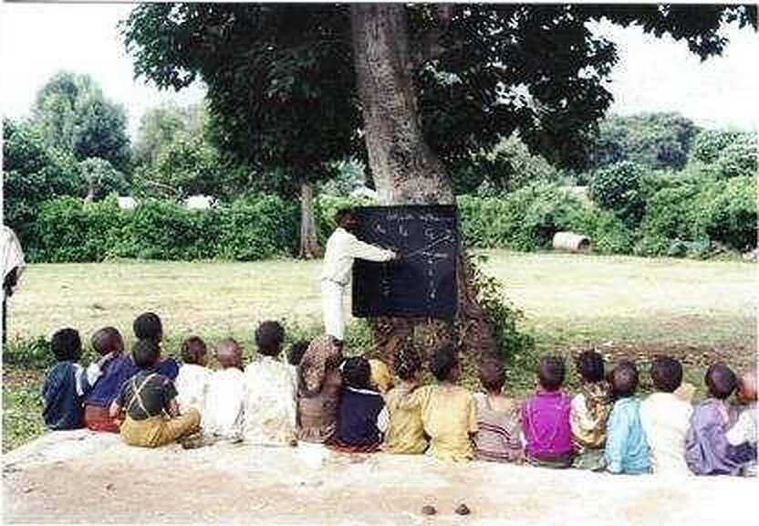
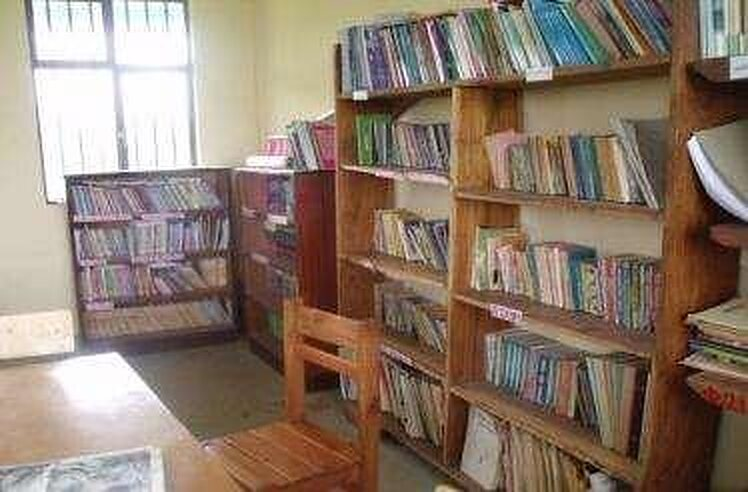
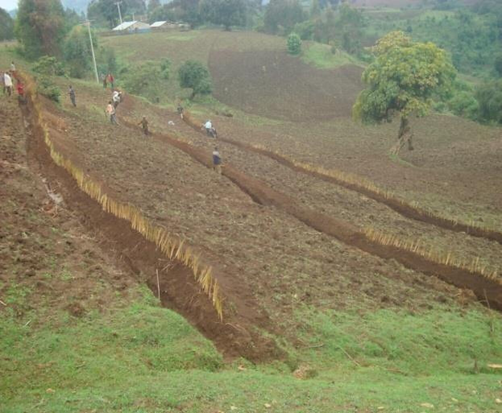
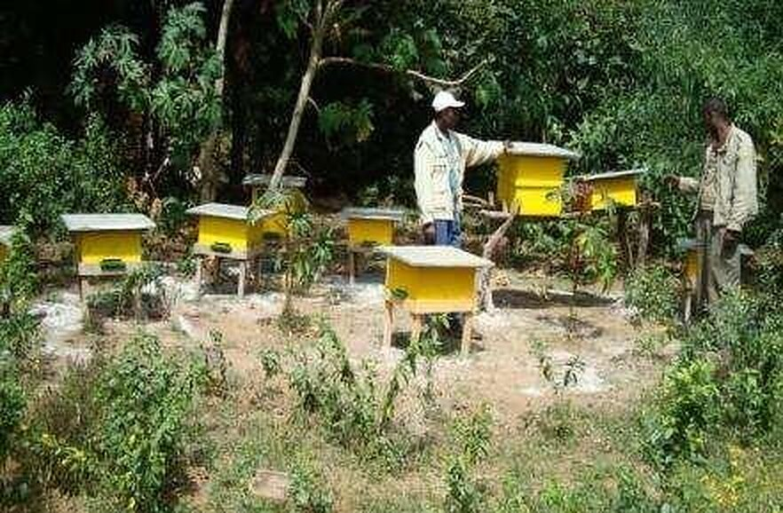
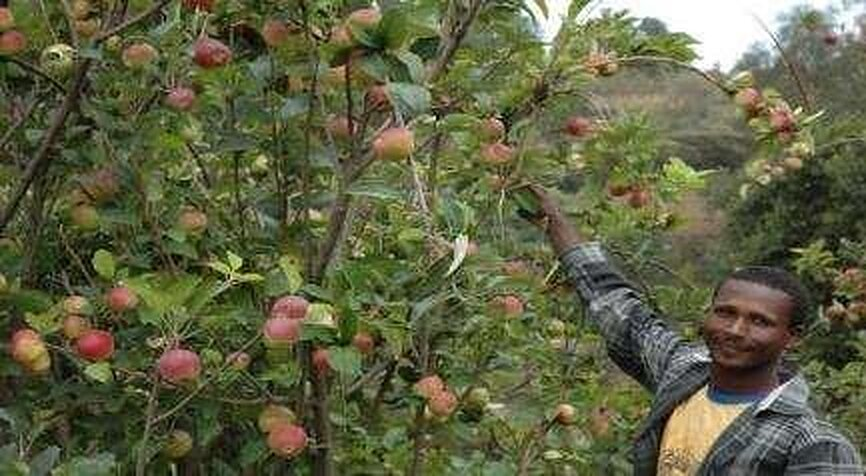
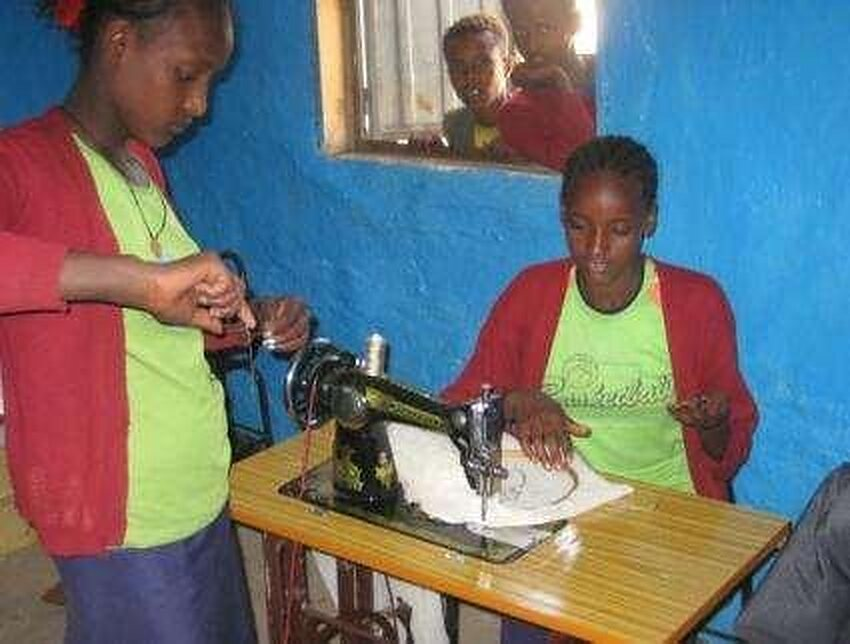
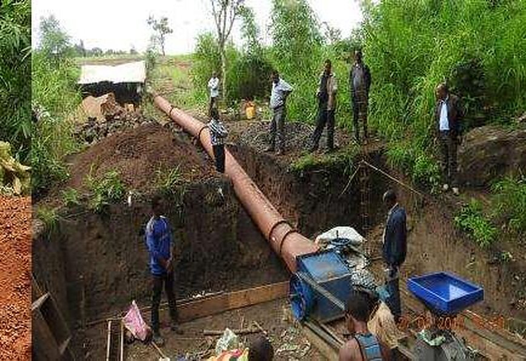
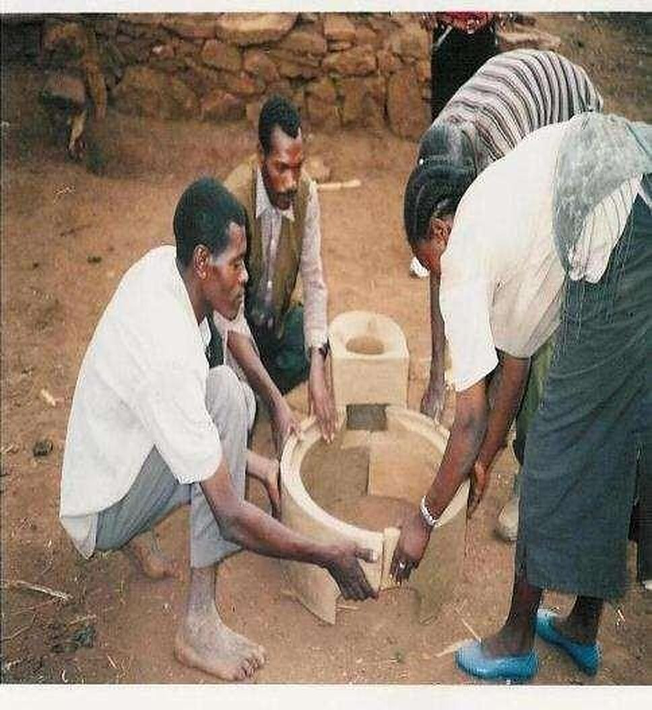
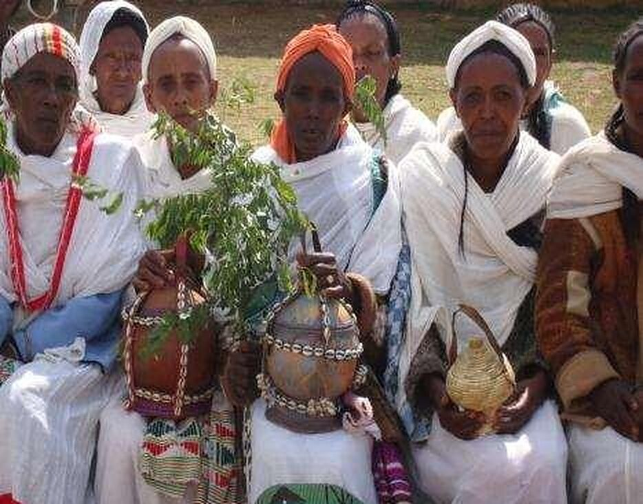
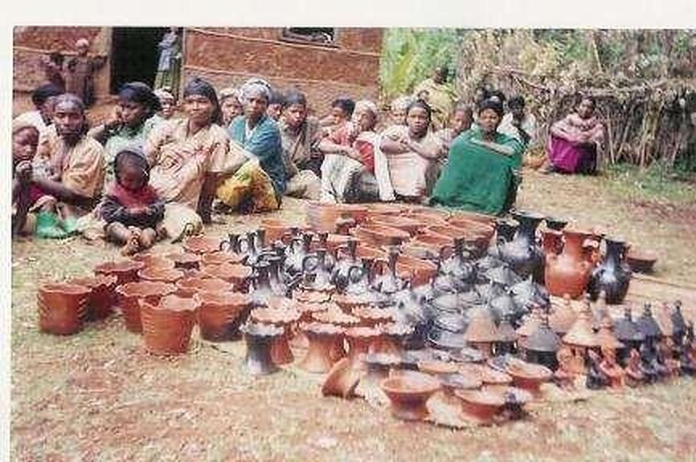

01Education
Oromia · South West Shewa
Speed School (ALFA)
Woliso
Creating access to primary education for out-of-school children through the Speed School programme.
Funded byGeneva Global Ethiopia
Projects
Every project combines education with the community’s own priorities — and is run from a field office near the people it serves. Current portfolio as of EFDA’s January 2024 profile.
Showing 7 of 7 projects
Oromia · South West Shewa
Woliso
Creating access to primary education for out-of-school children through the Speed School programme.
Oromia · East Wollega
Sibu Sire
Educational access for out-of-school children through the Speed School programme.
Oromia · South West Shewa
Woliso
Creating pathways to women’s economic empowerment through improved enset processing and product marketing.
Oromia · West Wollega
Gimbi, Nedjo & K/Kara woredas
Enhancing active youth engagement in local peacebuilding processes.
Oromia · Wollega zones
East, West, Horro Guduru & Kelem Wollega
Building the capacity of local actors to take part in national dialogue and transitional justice initiatives.
Oromia · East Arsi
Merti & Guna woredas
Promoting women’s reproductive health in Merti and Guna woredas.
Benishangul Gumuz · Asosa office
Benishangul Gumuz Regional State
Within-system support to improve the quality and equity of education in government schools.
No current projects match both filters.
Try “All themes” or another region.
Track record
Results from completed and ongoing EFDA projects across Oromia and Benishangul Gumuz.









